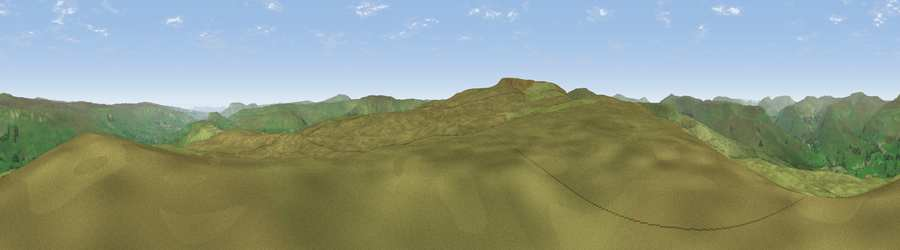

Viewpoint near Gayle
#8736 in England · top 18% of its area beats it · near GayleThe view, rendered

A 360° render of this exact spot computed from the terrain model, tree cover and land cover — summer colours, afternoon light, calibrated against photographs of famous viewpoints. Real trees, hedges and buildings will differ in detail.
The panorama
Grey silhouette: terrain skyline in each direction (720 bearings, Earth curvature and refraction included). Dashed green: skyline with trees (+15 m) and buildings (+8 m) as obstacles. Blue strip: how far the ground is visible on each bearing.
Where the view opens
Wedge length = distance to the farthest visible ground on that bearing (vegetation-aware). Rings at 10, 25 and 50 km.
What fills the view
98% grassland · 2% woodland
Angular shares of the visible panorama (visual magnitude), not map area. Landscape diversity 0.05 (0–1 Shannon).
Key numbers
More beautiful places nearby
The staircase of upgrades: each row has a higher view potential than everything closer. Driving times are estimates from straight-line distance, calibrated against real road routing — check an actual route before setting out.
| Place | Direction | Drive | Score |
|---|---|---|---|
| Drumaldrace | SSW · 1 km | ~2 min | 70.9 |
| Viewpoint near Gayle | SW · 4 km | ~10 min | 73.6 |
| Viewpoint near Cotterdale | N · 8 km | ~16 min | 74.4 |
| Viewpoint near Buckden | SE · 12 km | ~22 min | 77.3 |
| Whernside | WSW · 15 km | ~27 min | 79.9 |
| Warton Crag | WSW · 41 km | ~61 min | 83.2 |
| Viewpoint near Finsthwaite | W · 49 km | ~69 min | 90.3 |
| The Knoll | S · 401 km | ~383 min | 91.0 |
54.28231, -2.19004 · source: screening · position refined by local search. Computed location — check access rights before visiting.